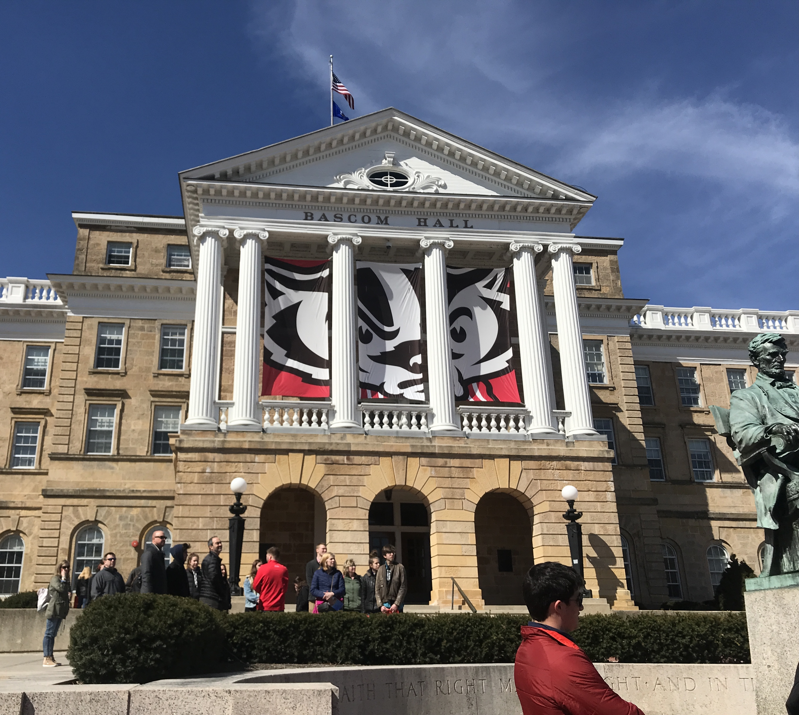

Hi! My name is Peri and I am currently a sophomore at University of Wisconsin-Madison. I am majoring in strategic communications in the journalism school, and I am also getting a certificate in digital studies. On this website, I will show you some of the ways that I enjoy spending my time in Madison! I love to try new restaurants, find fun activities to do, and go to work out classes!
Feel free to contact me at pscook2@wisc.edu with any questions